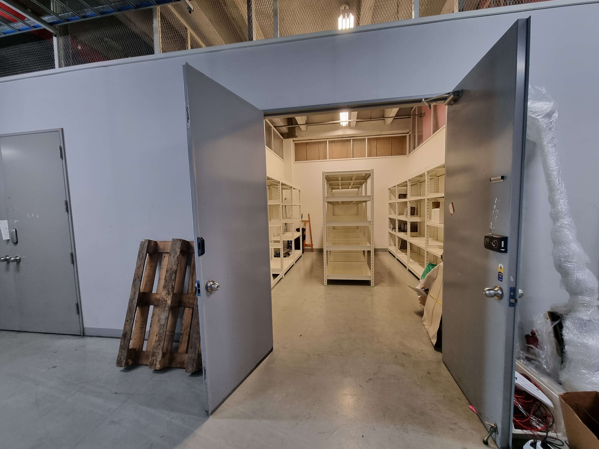
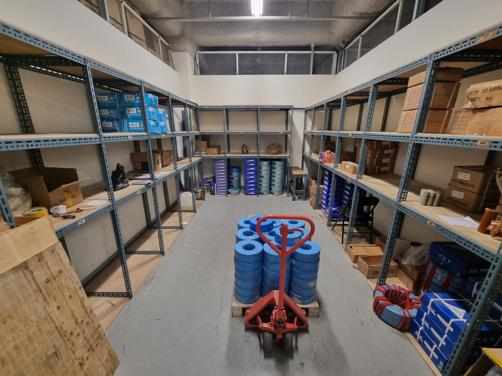
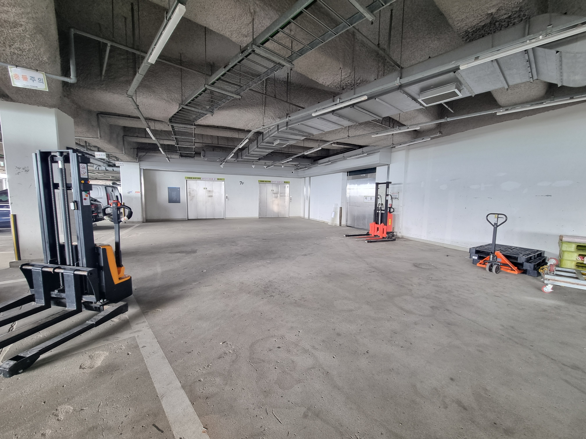

툴동 6·7층 지상
드라이브인 직접 접안
🚛 가든파이브 툴동 드라이브인 창고
1톤 탑차가 램프를 따라 6층·7층 하역장까지 직접 진입합니다. 승강기 대기 없이 신속한 상·하차가 필요한 유통 및 도소매 최적화 창고입니다.
📷 현장 예시 이미지

• 양문형 광폭 출입문 (파레트 및 대형 화물 최적화)

• 3면 앵글 선반 세팅 & 중앙 파레트 통로 확보

• 6·7층 지상 하역장 및 전동 지게차 조업 공간
※ 위치 및 방문 시점에 따라 내부 컨디션에 차이가 있을 수 있습니다.
📋 기본 임대 제원표
| 소재 건물 | 가든파이브 툴동 (TOOL) 지상 6층 · 7층 |
|---|---|
| 전용 면적 | 전용 약 7평형 |
| 임대료 및 관리비 | 월세 40만 원 / 관리비 12~13만 원 |
| 사업자 등록 | 가능·세금계산서 발행 |
| 차량 진입 | 1톤 화물차 6·7층 하역장 직접 램프 진입 (드라이브인) |
| 출입문 규격 | 양문 개방형 도어 (파레트 자키 진입 원활) |
| 추천 업종 | 입출고가 빈번한 도소매 유통, 부품·자재 유통, 택배 대량 발송 업체 |
✨ 툴동 드라이브인 창고 핵심 특징
1
화물차가 직접 올라가는 지상 드라이브인
지하에서 승강기를 기다릴 필요 없이, 1톤 탑차가 램프를 타고 6층과 7층 하역장까지 직진입하여 상·하차 시간을 대폭 단축합니다.2
양문 개방형 출입문으로 파레트 진입 용이
일반 단문형 도어와 달리 양쪽 문이 모두 활짝 열려, 핸드 리프트나 파레트 단위 대형 화물도 걸림 없이 반입할 수 있습니다.3
하역장 내 전동 지게차 및 물류 장비 운용
넓은 하역 구역에서 전동 지게차와 파레트 자키를 원활하게 운용할 수 있어 중량물 취급이 매우 편리합니다.4
사업자 등록 지원 & 세금계산서 발행
정식 임대차 계약 체결을 통해 사업자 등록증 주소지 활용 및 비용 처리가 가능.
⚠️ 툴동 램프 차량 진입 높이 확인
툴동 지상 6·7층으로 올라가는 램프의 차량 제한 높이는 최대 2.7m 이하입니다. 1톤 표준 탑차 및 저상 탑차는 원활하게 올라갈 수 있으나, 초고상 특장 하이탑 화물차는 진입 전 규격 확인이 필요합니다.
→ 차량별 진입 높이 규정 상세 보기툴동 드라이브인 창고 실시간 공실 확인
차량 진입 가능 여부와 현장 호실 답사는 사전 연락 주시면 친절히 안내해 드립니다.
📞 010-5024-8456 툴동 공실 안내